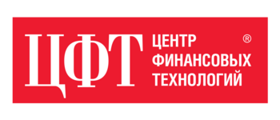
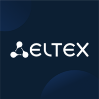

Hi!
I'm Yuriy Grigoryev, C/C++ developer currently working at CFT (Centre of Financial Technologies) in the FTData DBMS team (a fork of PostgreSQL).
Love cycling, debating, photography, working in summer camps, playing bass & guitar, and (as a result) composing music.
Links
-
Contact me:
Telegram or email (yuriy@grigoryev.org) - GitHub
- CV outdated
- LeetCode
Languages
- Russian — native
- English — C1 (Advanced)
- German — C1 (Advanced), ZfA DSD II certificate
Experience

Centre of Financial Technologies (since March 2026)
Working on FTData (a PostgreSQL fork), focusing on database internals, reliability, and performance.

Eltex (October 2024 – March 2026)
Joined us as a Software Engineering Intern and, within 1.5 years, demonstrated a steady growth. I also became a candidate for a subgroup lead role thanks to strong communication skills.
WLC product (Wireless Local Controller)
- Supported and evolved the core functionality of the Wi-Fi controller for managing and monitoring access points, with a focus on reliable inter-process communication and integration with dependent teams (QA, Web, etc.).
- Served as a maintainer of a FreeRADIUS-based authentication server: from integrating the server into production to developing custom modules, fixing logic, updating dependencies, closing vulnerabilities, and maintaining CI/CD.
- Improved a high-load subsystem for access point health monitoring: eliminated crashes and memory leaks, and increased performance.
- Refactored existing components.
- Performed design review and code review for adjacent systems.
- Mentored new team members.
Education
Bachelor's degree in Computer Science — Siberian State University of Telecommunications and Information Sciences (SibSUTIS), Novosibirsk